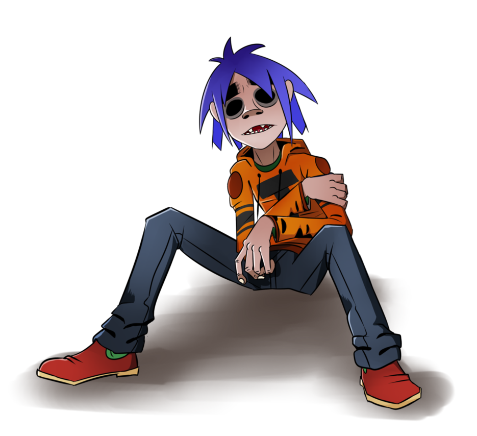
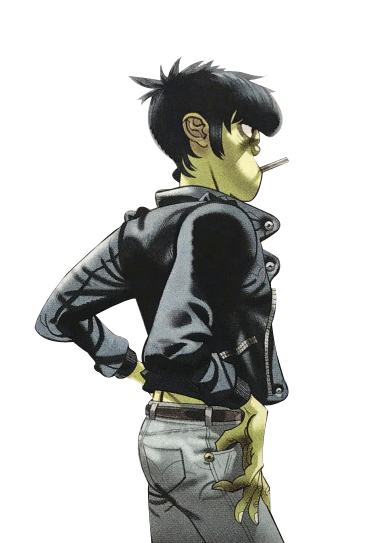
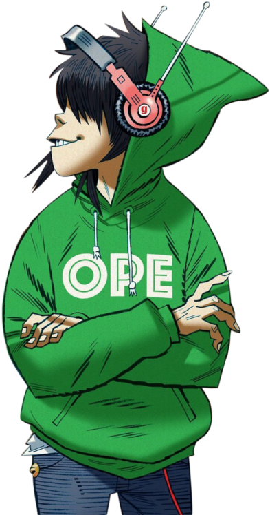
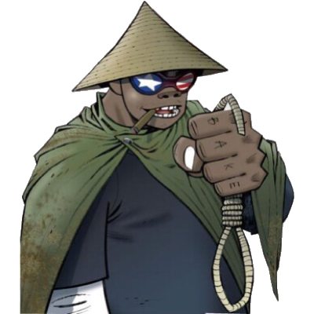

Stuart Pot (also known as 2-D, Stu-Pot, Face-Ache or Pot) is the lead vocalist and keyboardist of Gorillaz. 2-D has an irrational fear of whales. 2-D's name is also a reference to Gorillaz being cartoon characters, despite what the character claims. 2-D's singing voice is actually produced using a very distinct vocal effect produced by hardware in Studio 13. 2-D's name was originally Terry, according to the first-ever doodles of Gorillaz
Murdoc Alphonse "Faust" Niccals is the official bass player, self-proclaimed leader and founder of Gorillaz. Murdoc's prisoner number is 24602. Murdoc has at least one half-brother named Hannibal. We don't know anything about Hannibal except that he is older than Murdoc. Murdoc’s favorite alcoholic beverage is “Vodka Umbungo.” Murdoc's attire in each phase of the band draws its inspiration from Ozzy Osbourne.
Noodle is the official lead guitarist of Gorillaz. She also wrote the entire Demon Days album. According to the Gorillaz MTV Cribs episode, she likes Johnny Thunders and Richie Sambora. In 2016, she became the global ambassador for Jaguar Racing. In On Melancholy Hill, Noodle has a shotgun and a Tommy gun (we don't know if she still has these) Phase 1 and 2 Noodle also had a GameBoy Advance.
Russel Hobbs (also known as Russ) is the official drummer of Gorillaz. Russel is loosely based on American rapper Ice Cube Russel's backstory of having the spirit of various rappers inside of him is a part of what inspired the usage of guests and collaborators in all Gorillaz albums from the debut album onwards. Although drums are his primary instrument, since 2018, Russel has been shown to have the ability to play many different instruments aside from just drums and percussion.
